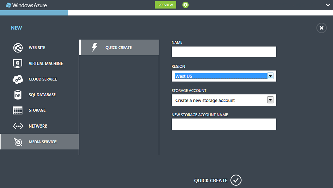
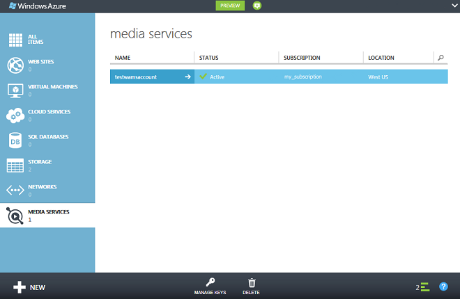

The Windows Azure Management Portal provides a way to quickly create a Windows Azure Media Services account. You can use your account to access Media Services that enable you to store, encrypt, encode, manage, and stream media content in Windows Azure. At the time you create a Media Services account, you also create an associated storage account (or use an existing one) in the same geographic region as the Media Services account.
This topic explains how to use the Quick Create method to create a new Media Services account and then associate it with a storage account.
Accessing Media Services requires two associated accounts:
In the Management Portal, click New, click Media Service, and then click Quick Create.

In NAME, enter the name of the new account. A Media Services account name is all lower-case numbers or letters with no spaces, and is 3 - 24 characters in length.
In REGION, select the geographic region that will be used to store the metadata records for your Media Services account. Only the available Media Services regions appear in the dropdown.
In STORAGE ACCOUNT, select a storage account to provide blob storage of the media content from your Media Services account. You can select an existing storage account in the same geographic region as your Media Services account, or you can create a new storage account. A new storage account is created in the same region.
If you created a new storage account, in NEW STORAGE ACCOUNT NAME, enter a name for the storage account. The rules for storage account names are the same as for Media Services accounts.
Click Quick Create at the bottom of the form.
You can monitor the status of the process in the message area at the bottom of the window.
The media services page opens with the new account displayed. When the status changes to Active, it means the account is successfully created.

When you double-click on the account name, the Quick Start page is displayed by default. This page enables you to do some management tasks that are also available on other pages of the portal. For example, you can upload a video file from this page, or do it from the CONTENT page.
In addition, you can view code that uses Windows Azure Media Services SDK to accomplish the following tasks: upload, encode, and publish videos. You can click on one of the links under WRITE SOME CODE section, copy the code and use it in your application.